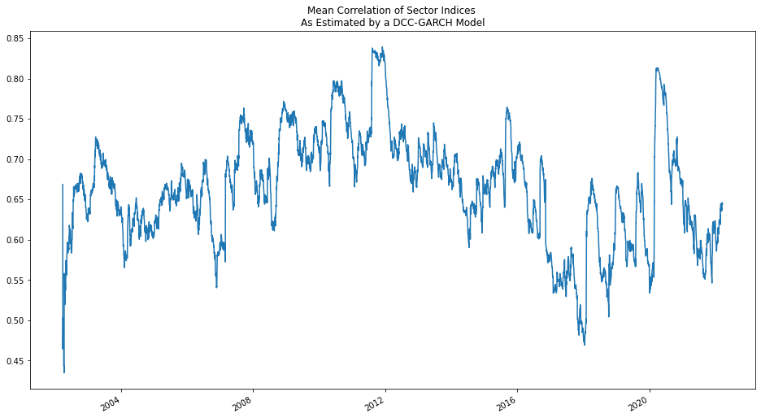
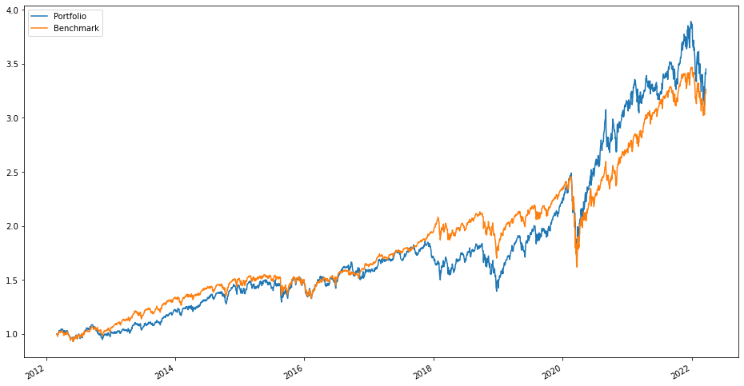

Building a Trend Following Trading System
Using a DCC-GARCH Model
$\DeclareMathOperator{\EMA}{EMA} \DeclareMathOperator{\EMAC}{EMAC} \DeclareMathOperator{\Var}{Var} \DeclareMathOperator{\Cov}{Cov} \DeclareMathOperator{\Vec}{vec} $ Now, let's try and integrate our GARCH model into a more complete systmatic trading system.
We compute expected returns by using a simple trend following algorithm put forth by Robert Carver [1]. Given a vector of prices of length $T$ and a scalar $\alpha$ defining a decay rate the exponential moving average at time $T$ is given
by $$\EMA_T(\alpha, p) = \alpha \cdot \sum^T_{t=1}{(1-\alpha)^{t-1}p_t}$$ We like to think of the decay rate $\alpha$ in terms of "span" which is a time period specified in days. Given a span $s$ we compute $\alpha$ as $\alpha = \frac{2}{s+1}$
Carver's trend following signal is based on comparing the exponential moving averages of different spans, we call this the Exponential Moving Average Crossover signal. Let $p_\text{diff}$ be the vector of length $T-1$ defined as $p_{\text{diff},t}
= p_t - p_{t-1}, t = 2, \ldots, T$ $$\EMAC_T(p, s_\text{short}, s_\text{long}) = \frac{\EMA_T(p, \frac{2}{s_\text{short} + 1}) - \EMA_T(p, \frac{2}{s_\text{long} + 1})}{\sqrt{\Var(p_\text{diff})}}$$ $$s_\text{short}
< s_\text{long}$$ The denominator in the above formula for the crossover signal is just the sample standard deviation of the absolute price changes. Carver suggests interpreting a positive value of EMAC as a sign of an upwards price trend and a negative
EMAC as a sign of a downwards price trend. Carver suggests summing $\EMAC$s with the following pairs of spans: 2:8, 4:16, 8:32, 16:64, 32: 128 and 64:256. We can express this Multiple-Exponential-Moving-Average-Crossover signal this as follows:
$$\text{MEMAC}=\sum^6_{n=1}{\EMAC(2^n, 2^{n+2})}$$ In order to effectively use this signal in our portfolio selection we must adapt the dimensionsless scalar that $\text{MEMAC}$ produces into an expected return. Using the system put forth
by Grinold [2] we can convert carver 's signal into an expected return as follows:
Given a vector of signals $s$ and a vector of subsequent excess returns $r$, all of length $T$, we have
$$\text{IC} = \frac{\Cov(r, s)}{\Var(r)\cdot \Var(s)}$$
$$ \alpha = \Var(r) \cdot \text{IC} \cdot \frac{s_T - \bar{s}_T}{\sqrt{\Var{(s)}}}$$
Where alpha is the predicted excess return and $\frac{s_T - \bar{s}_T}{\sqrt{\Var{(s)}}}$ is just the z-score of $s$. $\text{IC}$ is known as the Information Coefficient and is the correlation between a signal and excess return. We can calculate the $IC$ on multiple securities if we expect the model to work equally well on them. Given that we have no reason to doubt this, given a matrix $R$ of excess returns and a matrix $S$ of signals with $T$ observations and $n$ assets $S$ of signals then $$\text{IC} = \frac{\Cov(\Vec(R), \Vec(S))}{\Var(\Vec(R)) \cdot \Var(\Vec(S))}$$
Where $\Vec$ is the matrix vectorization operator which produces a column vector out of a given matrix by stacking its columns.
After some emprical testing I have, however, resolved to modify Carver's algorithm somewhat. Carver observes that the expected mean of an $\EMAC$ varies signficantly depending on the choice of spans. He fixes this by normalizing the $\EMAC$s using their
sample mean. I have achieved better results and a higher $\text{IC}$ by means of modifying the $\EMAC$ to be $$\EMAC_T(p, s_\text{short}, s_\text{long})=\frac{\EMA_T(r, \frac{2}{s_\text{short} + 1}) - \EMA_T(r, \frac{2}{s_\text{long} + 1})}{\sqrt{\Var(r)}}$$
$$r=\frac{p}{\nabla{p}}$$ Where $\nabla$ is the backshift operator, thus $r$ is simply a vector log returns. When implementing this I found this signal to consistently have a slightly negative IC. Thus in theory one would make more money by
doing exactly the *opposite* of what the signal suggests. While I could invert the signal, I would have no rationale for doing so and the IC would still be so incredibly low that it would likely make no money when actually trading. Instead
I opt to combine it with the GARCH model shown previously. We found that increased correlation coefficients as measured by the GARCH model alined with market downturns. Thus it might be reasonable to assume trends to be more predictive if
the correlation is higher. A bit of a stretch I know, but it has some intuitive appeal. 
We compute a weighting coefficient for each of the $\EMAC$s as follows: given a vector of mean correlations $\rho$ then we weight each trend with $$w_{T,s}=\ frac{\rho_{T}}{\rho_{T - s}}$$ $$\text{MEMAC}_T=\frac{\sum^6_{n=1}{w_{T, 2^{n+2}} \cdot \EMAC_T(2^n,
2^{n+2})}}{\sum^6_{n=1}{w_{T, 2^{n+2}}}}$$ We divide by the sum of the weights so as not to change the signal mean. We now run a backtest with a reblancing period of 20 days and optimize our portfolio using the Markowitz method. At each
time interval we fit a DCC-GARCH model with all prices up to that date and use it to predict future correlation and covariance. The results are rather disappointing with a tiny information ration of 0.07 and a visibly extremely high beta.
 But I am eager to see what will happen once I expand the number of possible assets and enable short selling in my backtester! To be continued thus!
[1]:Carver, Robert. Systematic Trading: A Unique New Method for Designing Trading and Investing Systems. Harriman House, 2015.
[2]: Grinold, Richard C. Active Portfolio Management: A Quantitative Approach for Providing Superior Returns and Controlling Risk. McGraw-Hill, 2011. link
What I Did During High School
A Look at Some Unsuccessful Trading Strategies
I entered high school with a determination to implement some quantitative trading algorithms. The concept of making money with nothing but a little math certainly appealed to me. I just had to be a little smarter and more insightful than your
average trader — something not too hard I figured. In any case, saying “I work on quantitative trading strategies” was a good opener at parties (perhaps it’s best I wasn’t invited to any).
The first step was finding some good data. I had pieced together a professional-looking website to join the start-up program of the financial data provider Intrinio. I then wrote a little script to scrape their APIs until their daily API call
cap was reached. Having never heard of a cronjob, I resorted to manually running the script every morning to get the data I need. This was, needless to say, something I most often absentmindedly forgot to do.
But of course, I wasn’t going to content myself with daily data or anything like that. So I scraped years of order book data from the IEX exchange and thus angered my father after our ISP complained that we’d exceed our monthly data cap. But with
that, I had plenty of data to sink my teeth in. All I needed was some software to put it to work.
I decided to write this backtesting software entirely by myself while being perfectly aware of all the wonderful existing software solutions that existed for it. To this day I am still toiling away at writing iterations of backtesting software
as I deludedly insist that my algorithms are too complex and my datasets too large for any mundane backtester.
My first attempt certainly had wild delusions of grandeur. I insisted on writing it in “the fastest language,” namely, c++. While I used the entirely wrong sort of database for my price data, and while I had never even heard of “multi-threading”
before, I figured my backtester would be the fastest purely because it was written in c++. I later went and bound all my c++ functions to python functions because who could be bothered to write an algorithm in c++.
The next step in my plan was crowdsourcing. I quite frankly wasn’t creative enough to come up with any interesting signals for trading so instead, I resolved to mooch off of the common man. I wanted to make all my software and data available for
people at my school so I fruitlessly spent a summer creating a web app that would automatically spin up an AWS server for people who made an account to which people could connect via an online IDE (I swear I thought of the idea before learning
about Quantopian). Oddly enough I succeeded in building this, but it came as no surprise at all that nobody used it.
After two years of toiling and coding, I still found myself no richer. So I took major action. I started the quantitative finance club. Herein I assembled 20 or so of the not-so-brightest-minds in my school and discussed trading theses.
Being high off of smoke inhalation from another California wildfire led to our first trading strategy: trading PG&E shares based on the sentiment of tweets from California state government officials. Below is a graph of PG&E stock price (yellow),
sentiment (green), and strategy return (blue).
Our next strategy attempted to trade shares of Take-Two Interactive based on the reviews of their games. I set up a system to scrape video game reviews off of Metacritic and then applied non-linear regression techniques to fit it to the price
movements of Take-Two stock. The result is some beautiful overfitting (blue is the return of the trading strategy, yellow is the return of the S&P 500 over the same period). Needless to say, this strategy failed miserably out of sample.
Now if you're curious what I did during middle school why not treat yourself to this article?
2021-01-08